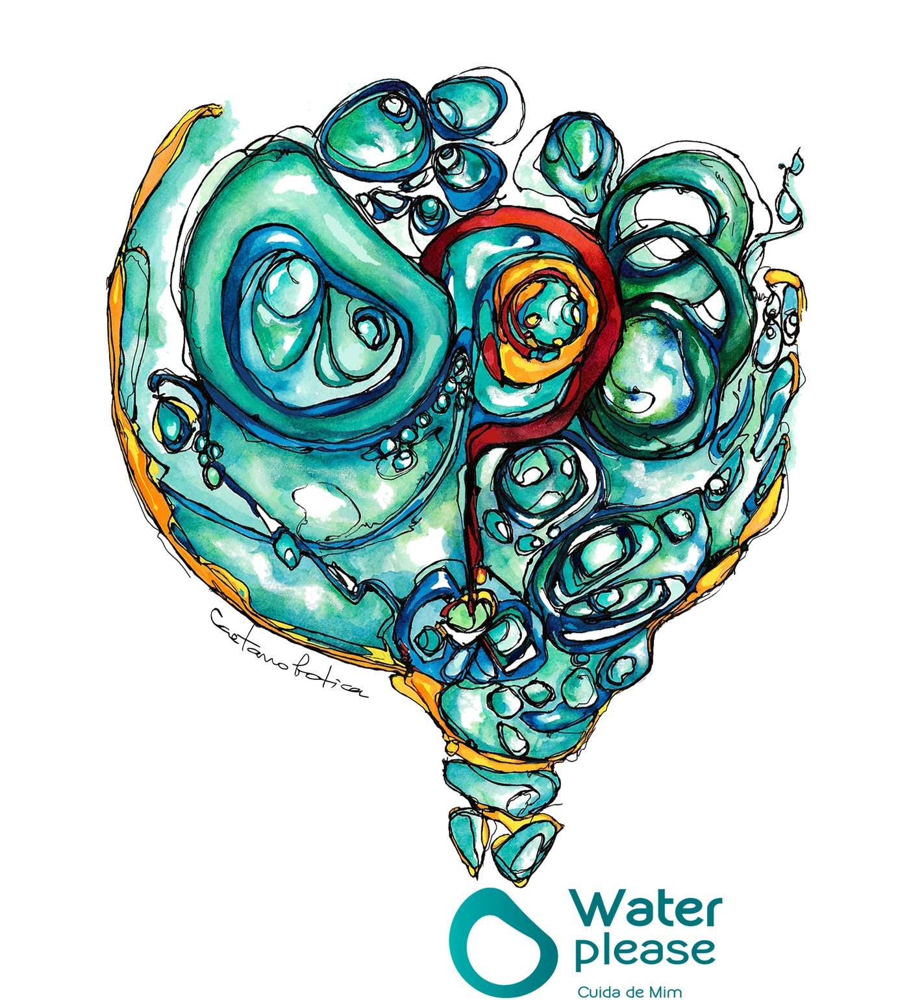
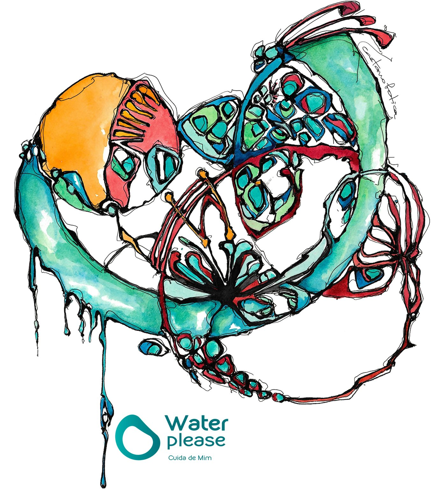

Duas obras originais, pintadas de propósito para a Water Please. Porque cuidar da água também é uma forma de arte.
Aguarela e tinta sobre papel. Gotas, bolhas e correntes — o mundo invisível de um copo de água, pintado à mão.


Estas obras nasceram das mãos de Caetano Botica, que aceitou o desafio de pintar aquilo que não se vê: a vida dentro da água. Cada gota, cada bolha e cada corrente destas aguarelas lembra-nos porque fazemos o que fazemos — a água merece cuidado, atenção e, às vezes, arte.
Conhece os equipamentos que transformam o gesto de beber água num ritual.